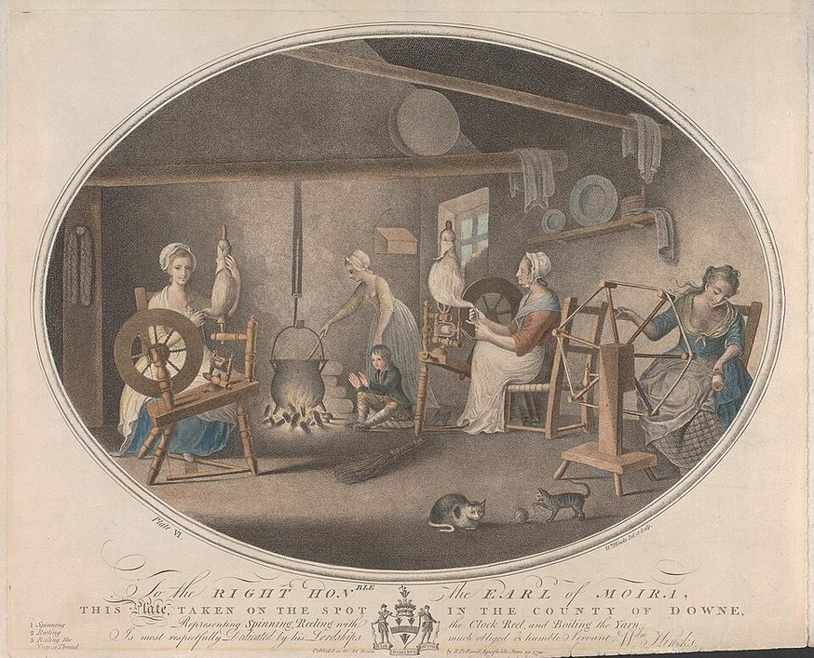
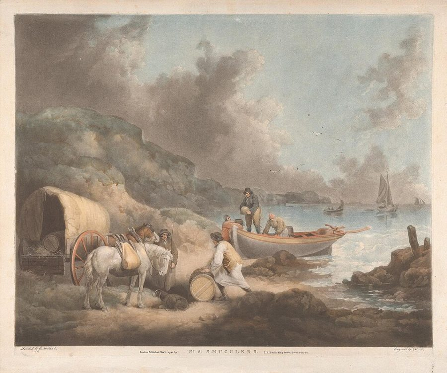

这一页在做什么
前面几章，斯密把重商主义让金银流进来的几种手段一件件拆了。这一章是他在 1784 年的第三版里补上的总结。他先清点一套「反着来」的规定：鼓励原料进口，禁止羊毛、机器，甚至技工出国，条文一条比一条狠，有的要砍手。他问的是：这些规定到底照顾了谁，又牺牲了谁？读的时候抓两条线：每条规定背后站着哪个行业；以及全书名句「消费是一切生产的唯一目的」，怎样被他当成一把尺子来用。

读之前：这一页在全书的哪里
上一页（卷四第 7 章）讲殖民地，那是重商主义各种手段里的最后一种。这一章 1776 年的初版里没有，是斯密在 1784 年的第三版里加的：那时他已经当了六年海关专员，北美殖民地也已经独立。他几次回头引自己的旧账：第 25–26 段说羊毛价格和羊肉价格的道理「前面讲过」，在卷一第 11 章（页 09）；第 52 段的梅休因条约，在卷四第 6 章（页 19）。下一章（页 22）转去评重农学派。
重商主义的规定口口声声为了国家，到底照顾了谁、牺牲了谁？斯密说生产只是手段、消费才是目的，这把尺子今天还量得准吗？
斯密说「消费是生产的唯一目的」明白到用不着证明。今天的福利经济学把生产者的得失也算进账里，反垄断界也还在争该不该只看消费者。把它当一把量特权的尺子读，见「本站怎么看」。
读的时候带着这几个问题。不用先找答案，读完回来对照「检查一下理解」。
- 第 4 段里，外国麻纱免税进口，谁得了好处，谁吃了亏？斯密为什么又说原料免税「完全公正合理」？§1
- 斯密说羊毛法「用血写成」，又说它对羊毛的产量和质量伤害没有想的那么大。这两句矛盾吗？§3 §5
- 不许机器和技工出国，斯密说它牺牲了什么？「值得称道的动机」是真心夸吗？§7
- 「消费是唯一目的」这把尺子，斯密拿去量了哪几样政策？全章最后一句说，这一章里被牺牲的主要是谁？§8
这一页的路线
这一章的前三分之二像一本海关手册的摘抄。斯密按货物一类类数下去：先是鼓励进口的原料（麻纱、美洲的造船材料），再是禁止或重税出口的原料（羊毛、活羊、漂白土、生皮、牛角、煤），最后是禁止出口的工具和技工。每一类他都问同一个问题：这条规定护着谁？中间他停下来讲分寸：羊毛禁令对产量和质量的伤害「也许」没有想象的大，与其禁止，不如课一笔出口税。读到第 49 段会觉得一下子跳高了：刚还在说牛角和梳子，忽然升到一条普遍原则。其实前面的清单是证据，这一段是判词；后面四段拿判词把前几章讲过的政策逐一量过，最后点出设计者。
斯密落在哪：消费是一切生产的唯一目的，重商主义却把它颠倒了。这一章的规定照顾的是富有、有势力的制造业主，牺牲的与其说是消费者，不如说是组织不起来的别的生产者；最极端的例子，是为殖民地打的两场大仗。设计者是生产者，头号是商人和制造业主。
分节地图
这一页是卷四第 8 章，本站切成 8 节。粗体是本站起的节名；「杨译里找」后面是杨敬年译本里这一节开头附近的小标题或第一句，在电子书里搜它就能跳过去；灰色的英文是原文这一节开头的几个词。标「先读」的是最短读法，读完打个勾。
- 穷纺纱女和富织布商重商主义体系抑制制造原料和生产工具的输出THOUGH the encouragement of exportation, and the …第 1 段说重商主义在原料上「似乎」反着来。第 3 段说原料免税完全公正合理，第 4 段笔锋一转，替穷纺纱女说话。
- 给美洲原料的七笔奖金对进口原料发给奖金主要限于美洲产物如造船用品The encouragement given to the importation of …七笔殖民地原料进口奖金的年份和费率清单，可以跳。只看第 15 段末尾：惨痛的经验已经揭穿了这套体系的愚蠢。
- 用血写成的羊毛法羊毛和生羊的出口被用重罚禁止The exportation of the materials of manufacture …第 17 段「用血写成」，第 18–20 段是砍手、死刑、倾家荡产的条文。留意斯密说的是「但愿从未执行过」。
- 离海五英里不许夜运羊毛为了防止私运出口，羊毛内地商业因限制而大受阻碍In order to prevent exportation, the whole …运羊毛的规矩，读来像缉私条例；第 23 段挖苦一条法律「非常宽大」。第 24 段拆穿「英格兰羊毛天下第一」，值得一看。
- 与其禁止，不如课税这些规定降低了羊毛的价格，像所预期的那样It has been shown in the foregoing …斯密讲分寸的一节：第 26–28 段一串 perhaps、I am disposed to believe，结论是伤害没想的大；第 29–32 段主张改征出口税。
- 从牛角到海狸皮生皮禁止出口By the 13th and 14th of Charles …生皮、牛角、毛线、表壳、金属、染料、海狸皮、煤的出口限制细目，可以跳。挑第 34 段牛角匠和第 40 段塞内加胶看就够。
- 不许机器和工匠出国普通禁止生产工具出口The exportation, however, of the instruments of …织机、工具禁运，引诱技工出国要罚款坐牢。第 47–48 段的反话（「值得称道的动机」）是全章最辣的两段。
- 消费是一切生产的唯一目的重商主义体系荒谬地认为，工商业的目的是生产而不是消费Consumption is the sole end and purpose …全书名句在第 49 段。杨译这条小标题排在这一段正文后面，按它找会翻过头。第 53 段算帝国的账，第 54 段问谁设计的。
先用中文过一遍：这一页的概念
先把这一页用到、斯密默认你懂的几个概念讲一遍。讲的是概念本身，斯密拿它推出什么，读原书时自己看。每个概念都有一句「今天」：今天的经济学怎么叫它、怎么看它。重商主义和贸易差额见页 16 的重商主义、贸易差额；靠争规矩而不是多生产来挣钱，见页 08 的寻租。
§1有效保护 effective protection
关税护住的，不是一件商品的全部价钱，而是本国在这件商品上「加工」的那一截。设想一匹麻布在世界市场上卖 100，其中 60 是麻纱的钱，40 是织布这一环加上去的。对进口麻布征 20% 的税，国内的布价能涨到 120；要是麻纱照样免税、按 60 买进，织布这一环能分到的就从 40 变成 60，多了一半，等于受了 50% 的保护，比账面上的 20% 高得多。反过来，纺纱的人一点保护也没有，还得和免税进来的外国纱抢生意。斯密没用这个词，可第 3–4 段讲的正是这个结构：原料免税，成品重税，出口还有奖金。
今天：经济学家 Corden 1966 年把它写成「有效保护率」。富国对原料低税、对加工品高税的「关税升级」，至今仍是出口原料的穷国的老抱怨，见「对照今天」。
在这一页：第 3–5 段外国麻纱免税、本国麻布出口有奖金；第 54 段说本章里被牺牲的，多是别的生产者。
§7出口禁令：原料、机器和手艺 prohibition of exportation
平常的保护是把外国货挡在门外；出口禁令反过来，把本国的东西关在门里。羊毛不许卖出国，好让本国织呢的人买得便宜；织机和工具不许运出去，技工不许出国教手艺，好让外国人学不会。打个比方：一条街上的饭馆联手，不许本地菜农把菜卖给外镇的馆子，还不许自家厨师去外镇做工。斯密说，这类规定的动机是靠打压邻居，而不是靠改进自己，来扩张本国的制造业（第 48 段）；代价落在本国人身上：羊毛价被压低，养羊的人吃亏；技工丢了出国谋生的自由。这个概念名是本站起的，书里没有专门的叫法。
今天：叫「出口管制」，多打着国家安全的旗号，比如对先进芯片和制造设备的限制。斯密自己也承认国防重于富裕（页 17）。效果和代价至今在争。
在这一页：第 17–24 段羊毛和活羊，第 33–42 段各种半成品，第 43–46 段机器和技工，第 47–48 段斯密的评语。
§8消费是生产的唯一目的 Consumption is the sole end and purpose of all production
做东西，是为了有人用。一家面包房存在，是为了让人吃上面包，不是为了让面包师有活干；面包师的生计当然要紧，可它是靠把面包做好、卖出去挣来的。斯密把这个常识变成一把尺子：一项政策好不好，最后看用东西的人得到了什么；生产者的利益，只在有助于消费者的范围内才值得照顾。拿它去量重商主义：限制进口，是让买东西的人付高价，好处归国内厂商；出口奖金（见页 19 的出口补贴），是先收税发奖金，再让国内价格上涨；殖民地贸易垄断，是让全国人掏钱打仗，替少数生产者保住一国顾客。这里的「消费」是用上、享用，不是「多花钱」：斯密在全书最看重的恰恰是节俭和积累。
今天：相近的说法是「消费者福利」「消费者主权」。福利经济学算账时，生产者的得失也算进去；反垄断界至今在争，该不该只看消费者付的价格。见「本站怎么看」。
在这一页：第 49 段立论，第 50–53 段拿它量进口限制、出口奖金、梅休因条约和殖民地，第 54 段问是谁设计的。
故事和背景
这一页里的人、事和 18 世纪的东西，按在书里出现的顺序排，标题前是节号。
§1海关专员烧掉了自己的领巾
这一章是从海关的账本里长出来的。1778 年初，斯密被任命为苏格兰海关专员，此后天天和税则、走私案打交道。Cannan 在章末的注里说，这一章多半得益于这份差事，斯密的藏书里就有一本 1782 年的税则汇编。1784 年的第三版把它加了进去，所以书里写着「现在（1783 年）」（第 42 段），「上两次战争」也包括了美国独立战争（第 53 段）。还有一件趣事：1780 年 1 月 3 日，他写信给政界人物 William Eden，说上任一个星期后，他对照海关里挂着的违禁品清单，发现自己的硬领巾、领结、褶边袖口、手帕几乎没有一样不是违禁品，「我想做个榜样，就把它们全烧了」。同一封信里，他建议拿一笔出口税代替羊毛出口禁令，正是这一章第 29–32 段的主张。
§1三四个纺纱女，养一个织布工
第 4 段的账：麻布要先把亚麻纺成纱，再把纱织成布。纺纱费工得多，至少三四个纺工才供得上一个织工不停地织，做一匹麻布的全部劳动，五分之四以上花在纺纱上。可纺纱的多是穷人家的妇女，散在乡下各处，没人撑腰；赚钱的是卖成品布的大老板。于是议会给本国麻布的出口发奖金，对外国麻布征重税，某几种法国麻布干脆不许在国内用；同时让外国麻纱免税进来，和本国的纺纱女抢生意，先是把税降到每磅 1 便士，不久连这 1 便士也免了。斯密的数字也有小错：Cannan 注明，他把税则表上的「估价」当成了税额，以前真正的税只有那个数的两成。
§3德拉科的法律和集市上的左手
德拉科（Draco）是公元前 7 世纪末雅典的立法者，传说他的法典几乎什么罪都判死刑。普鲁塔克记下一位雅典演说家的俏皮话：这些法律不是用墨、是用血写的。英文 draconian（严酷的）就从他来。斯密借这句话骂英国保护毛纺业的法律（第 17 段）：伊丽莎白一世时的一条法令规定，出口活羊的人，初犯没收全部财产、监禁一年，然后在集日的集镇上砍下左手，钉在那里；再犯判重罪，处死。斯密说，为了国家人道的名誉，但愿它从没执行过；就他所知，它从未被直接废除，法学家霍金斯似乎认为它仍然有效，不过它也许可以算被查理二世时的一条新法实际上取代了（第 19 段）。至于真执行过没有，书里没说，本站也没查到。
§3罚到倾家荡产，再流放七年
第 20 段说，这条「较温和」的新法照样够狠。私运羊毛出口，每磅罚 3 先令，约为货值的四五倍；定了罪的商人，从此不能向代理人或别的人追讨欠他的任何债，法律的用意就是让他彻底破产。斯密挖苦道：好在大众的道德还没败坏到这条法律的设计者那个地步，他没听说有人钻过这个空子赖账。三个月内交不上罚款，流放七年；提前回来，按重罪论处，「不得享受神职特权」（benefit of clergy）。这是中世纪传下来的老规矩：起初，能读一段拉丁文经文的人可以算作教士，免于绞刑；后来成了许多轻罪初犯的一道免死牌，直到 1827 年才废除。
§4夜里的「猫头鹰」

第 21–23 段的规矩读起来像缉私条例：羊毛只能装在皮包或布包里，外面用三英寸高的大字写上 wool 或 yarn；离海五英里以内，只许在日出到日落之间运；靠海的郡分区（hundred，郡以下的旧行政区）要是有羊毛从境内私运出去，全区居民集体赔钱，就像遭了抢劫的案子一样。肯特和萨塞克斯管得更严：离海十英里以内的羊主，剪毛后三天内要向海关书面报告毛的数量和存放地点。这两个郡正对着法国。17 世纪末，肯特的罗姆尼沼泽（Romney Marsh）一带有专把羊毛偷运去法国的人，叫 owlers，「猫头鹰」，一般说是因为他们夜里干活。斯密说，禁令挡不住走私，羊毛「众所周知」大量流出（第 32 段）。英国到 1824 年前后才取消羊毛出口禁令。
§6塞内加胶：贪心落了空
塞内加胶就是阿拉伯胶，斯密把它列在染坊用的「染料」一类（第 40 段）。它的主要产地在塞内加尔河一带，原来由法国独占那里的贸易，英国只好准许从欧洲各地进口。斯密说，「1755 年开始的那场成功的战争」（也就是七年战争）让英国接手了这块地方。和约一签，制造业主马上要来了垄断：非洲出产的胶只许运到英国，再出口每英担要交 1 镑 10 先令的重税，好让他们按自己定的价买下全部的胶。结果走私大兴，大量的胶偷偷运了出去，大概欧洲各个制造业国家都有，尤其是荷兰，不但从英国运，也直接从非洲运。后来的法令只好把这笔税降到 5 先令。斯密的评语：他们的贪欲这一回也和许多别的时候一样，自己落了空。
§7记在脑子里的纺纱厂
第 43–46 段：织袜机，以及棉、麻、毛、丝各业用的工具，一律禁止出口；引诱技工出国，后来加重到初犯每引诱一人罚 500 镑、监禁一年，再犯 1000 镑、两年。伦敦普通劳工一天挣 18 便士（卷一第 8 章第 31 段），按一年干三百天算，一千镑够他挣四十多年。技工出了国，接到警告六个月内不回来，就丧失继承权、没收财产、当外国人看待。这挡住了吗？1789 年，Slater 没带一张图纸，悄悄去了美国，在罗得岛的波塔基特和商人 Moses Brown 合作，凭记忆搭起了 Arkwright 式的水力纺纱机，1790 年开工。英国到 1824 年才废除技工出国的禁令，1843 年才放开机器出口。
§8两亿镑的账
第 53 段的数字：「上两次战争」，也就是七年战争和美国独立战争，花了两亿镑以上，又新借了一亿七千万镑以上的债。今天的研究给出的英国国债：1756 年约 7500 万镑，1763 年约 1.33 亿镑，独立战争结束时约 2.4 亿镑。两次战争新增约一亿六千多万镑，斯密的数没有离谱。他接着说，光这笔新债的利息，就超过每年运往殖民地的全部货值。1763 年英国国债一年的利息约 440 万镑，按这个利率推，一亿七千万镑的新债一年利息在五百万镑以上（本站估算）；富兰克林 1768 年估计，英国一年卖给北美殖民地的货约 300 万镑。斯密的比较大体站得住，可两次战争是不是只为殖民地而打，要另说，见「对照今天」。
原典：斯密的原话
这本书是公版书，下面几段整段放斯密的原文，配本站的白话译。原文后面的灰字告诉你它在杨译里的哪个小标题附近，可以对照着读；最后一行是这段里今天容易读错的 18 世纪词。
§1穷纺纱女和富有的大老板
斯密少有地替女性劳动者说话，也最能破「斯密替商人说话」的误读。在杨译各种原料免征关税那个小标题下面那一大段的后半。
To say nothing of the industry of the flax-growers and flax-dressers, three or four spinners, at least, are necessary, in order to keep one weaver in constant employment; and more than four-fifths of the whole quantity of labour, necessary for the preparation of linen cloth, is employed in that of linen yarn; but our spinners are poor people, women commonly, scattered about in all different parts of the country, without support or protection. … By encouraging the importation of foreign linen yarn, and thereby bringing it into competition with that which is made by our own people, they endeavour to buy the work of the poor spinners as cheap as possible. They are as intent to keep down the wages of their own weavers, as the earnings of the poor spinners, and it is by no means for the benefit of the workman, that they endeavour either to raise the price of the complete work, or to lower that of the rude materials. It is the industry which is carried on for the benefit of the rich and the powerful, that is principally encouraged by our mercantile system. That which is carried on for the benefit of the poor and the indigent, is too often, either neglected, or oppressed.
本站译：种亚麻、整理亚麻的人出的力且不去说，至少要三四个纺纱工，才能让一个织布工一直有活干；做一匹麻布需要的全部劳动，五分之四以上花在纺纱上。可我们的纺纱工是穷人，多半是妇女，散住在全国各个角落，没人撑腰，也没人保护。……他们（那些大制造业主）鼓励外国麻纱进口，让它和我们自己人纺的纱竞争，为的是把穷纺纱工的活计买得越便宜越好。他们一门心思压低自家织工的工资，也一门心思压低穷纺纱工的收入；他们想方设法抬高成品的价钱、压低原料的价钱，绝不是为了干活的人着想。我们的重商主义体系主要扶持的，是为富人和有权势的人谋好处的那些营生；为穷人和贫苦人谋好处的营生，太常被冷落，或者被压迫。
略去的几句说：大老板赚钱靠卖织好的布，不靠卖纺工的纱，所以布要卖得贵、原料要买得贱。「too often」是原话：太常，不是「总是」。
- industry这里是劳动、营生，不是「工业」
- master manufacturers雇人开工场的老板，manufacturer 在别处也可指干活的工匠
- indigent贫苦的、穷困的
§3像德拉科的法律一样，用血写成
全章火气最大的一段：毛纺业主同时拿到了两份垄断，一份对付消费者，一份对付养羊人。在杨译羊毛和生羊的出口被用重罚禁止这个小标题下面。
Our woollen manufacturers have been more successful than any other class of workmen, in persuading the legislature that the prosperity of the nation depended upon the success and extension of their particular business. They have not only obtained a monopoly against the consumers by an absolute prohibition of importing woollen cloths from any foreign country; but they have likewise obtained another monopoly against the sheep farmers and growers of wool, by a similar prohibition of the exportation of live sheep and wool. The severity of many of the laws which have been enacted for the security of the revenue is very justly complained of, as imposing heavy penalties upon actions which, antecedent to the statutes that declared them to be crimes, had always been understood to be innocent. But the cruellest of our revenue laws, I will venture to affirm, are mild and gentle, in comparison of some of those which the clamour of our merchants and manufacturers has extorted from the legislature, for the support of their own absurd and oppressive monopolies. Like the laws of Draco, these laws may be said to be all written in blood.
本站译：我们的毛纺织业主，比其他任何一类干活的人都更成功地让立法机关相信：国家的繁荣，系于他们这一行的兴旺和扩张。他们靠一纸禁令，让任何外国的呢绒都不许进口，拿到了一份对付消费者的垄断；还靠同样禁止活羊和羊毛出口，拿到了另一份对付养羊人和羊毛生产者的垄断。为保障国家税收而订的许多法律太严，人们抱怨得很有道理：有些行为，在法律宣布它们是罪之前，一向被看作无辜，现在却要受重罚。可是我敢断言，我们最残酷的税收法律，比起商人和制造业主吵吵嚷嚷、从立法机关硬要来、替他们自己荒唐又欺压人的垄断撑腰的某些法律，也算得上温和宽厚了。这些法律，可以说和德拉科的法律一样，全是用血写成的。
斯密当时就管着税收法律，所以拿它来比。「I will venture to affirm」「may be said」是原话：他敢断言的是两类法律谁更狠，「用血写成」是一个比喻。
- revenue国家的税收、国库收入；revenue laws 是为收税订的法律
- clamour吵嚷、大声疾呼
- workmen这里泛指从事某一行的人，包括老板
§7「值得称道的动机」
反话的样本，也说出了这些禁令的真实目的。在杨译目的是在使我们邻国的制造业不能发达这个小标题前后两段。
It is unnecessary, I imagine, to observe, how contrary such regulations are to the boasted liberty of the subject, of which we affect to be so very jealous; but which, in this case, is so plainly sacrificed to the futile interests of our merchants and manufacturers. The laudable motive of all these regulations, is to extend our own manufactures, not by their own improvement, but by the depression of those of all our neighbours, and by putting an end, as much as possible, to the troublesome competition of such odious and disagreeable rivals. Our master manufacturers think it reasonable, that they themselves should have the monopoly of the ingenuity of all their countrymen. Though by restraining, in some trades, the number of apprentices which can be employed at one time, and by imposing the necessity of a long apprenticeship in all trades, they endeavour, all of them, to confine the knowledge of their respective employments to as small a number as possible; they are unwilling, however, that any part of this small number should go abroad to instruct foreigners.
本站译：这些规定和我们引以为傲的臣民自由有多么相悖，我想用不着指出：我们装作对这份自由看得极重，可在这件事上，它却明明白白地被牺牲给了商人和制造业主那点无谓的利益。所有这些规定都出于一个「值得称道」的动机：扩张我们自己的制造业，靠的不是它自身的改进，而是压低所有邻国的制造业，并且尽可能了结那些可恨又讨厌的对手带来的恼人竞争。我们的制造业老板们认为，全国同胞的聪明才智理应由他们独占。他们在有些行业限制一次能雇多少学徒，在所有行业规定必须当很长的学徒，个个都想把本行的知识关在尽量少的人中间；可就是这少数人，他们也不愿意让其中任何一个出国去教外国人。
laudable、odious and disagreeable 都是反话。限制学徒人数、规定长学徒期，是页 08 讲的同业公会（行会）的老手段：对内把手艺关起来，对外不许它出国。
- liberty of the subject英国臣民依法享有的人身自由，英国人一向拿它自夸
- affect装作，不是「影响」
- futile微不足道的、无谓的
§8消费是一切生产的唯一目的
全书名句之一，常被单独引用，甚至被当成「鼓励多花钱」的口号；连着下一段读，就知道它是一把量政策的尺子。在杨译里搜译本：「消费是所有生产的唯一目的」，那条小标题在它后面。
Consumption is the sole end and purpose of all production; and the interest of the producer ought to be attended to, only so far as it may be necessary for promoting that of the consumer. The maxim is so perfectly self-evident, that it would be absurd to attempt to prove it. But in the mercantile system, the interest of the consumer is almost constantly sacrificed to that of the producer; and it seems to consider production, and not consumption, as the ultimate end and object of all industry and commerce. In the restraints upon the importation of all foreign commodities which can come into competition with those of our own growth, or manufacture, the interest of the home-consumer is evidently sacrificed to that of the producer. It is altogether for the benefit of the latter, that the former is obliged to pay that enhancement of price which this monopoly almost always occasions.
本站译：消费是一切生产唯一的归宿和目的；生产者的利益，只应在促进消费者利益所必需的范围内加以照顾。这条道理再明白不过，要去证明它反倒荒唐。可在重商主义体系里，消费者的利益几乎一直被牺牲给生产者的利益；这套体系似乎把生产，而不是消费，当成一切劳动和商业的最终目的。凡是限制那些会和本国种的、造的东西竞争的外国货进口，国内消费者的利益显然都被牺牲给了生产者。这种垄断几乎总会抬高价格，消费者被迫付这笔涨价，完全是为了生产者的好处。
「almost constantly」「seems」「almost always」都是原话。斯密说的是政策该以谁为准，不是说人该多买东西。
- end目的，不是「终点」
- maxim准则、格言
- growth本国种出来、养出来的东西，与 manufacture（制造的东西）相对
§8一国顾客，和这套体系的设计者
殖民帝国的账和全章的结语。前半和页 20 的殖民地垄断是同一个论点。在杨译梅休因条约的规定这个小标题后面两段。
A great empire has been established for the sole purpose of raising up a nation of customers who should be obliged to buy from the shops of our different producers, all the goods with which these could supply them. For the sake of that little enhancement of price which this monopoly might afford our producers, the home-consumers have been burdened with the whole expence of maintaining and defending that empire. … It cannot be very difficult to determine who have been the contrivers of this whole mercantile system; not the consumers, we may believe, whose interest has been entirely neglected; but the producers, whose interest has been so carefully attended to; and among this latter class our merchants and manufacturers have been by far the principal architects. In the mercantile regulations, which have been taken notice of in this chapter, the interest of our manufacturers has been most peculiarly attended to; and the interest, not so much of the consumers, as that of some other sets of producers, has been sacrificed to it.
本站译：一个大帝国建立起来，唯一的目的，是养出一国的顾客，让他们只能从我们各路生产者的店铺里，买这些店铺供得上的一切货物。为了这种垄断也许能给我们的生产者带来的那一点点涨价，国内的消费者被压上了养活、保卫这个帝国所需的全部开销。……这整套重商主义体系是谁设计出来的，不难判断。我们可以相信，不是消费者，他们的利益被完全忽视了；而是生产者，他们的利益被照顾得无微不至；在生产者当中，我们的商人和制造业主又远远是头号的设计师。在本章提到的那些重商主义规章里，受到格外照顾的是我们的制造业主；而为他们牺牲掉的，与其说是消费者的利益，不如说是另外几类生产者的利益。
略去的是两亿镑和一亿七千万镑那两句，见「故事和背景」。最后一句的 not so much … as 是全章的落点：本章的规定里，吃亏最多的是纺纱工、养羊人、牧场主这些组织不起来的生产者。
- customers顾客，斯密在这里把殖民地说成一家店的老主顾
- contrivers策划者、设计者，带贬义
- expenceexpense 的旧拼法
译本勘误
杨译这一章整体可靠。下面只收会把人读歪的几处。灰字是英文原文那一处的几个词；方框里是杨译的原句，在电子书里搜它。
§1「绝不是为了工人」这半句没了漏译
… by no means for the benefit of …
译本：「所以他们力图提高制成品的价格」
原文说：他们想方设法抬高成品价、压低原料价，绝不是为了干活的人好。杨译漏了这半句，又多出一个「所以」，读起来像是压工资导致了抬价。斯密在这里点的是题：这些规定照顾老板，不照顾工人。
§5斯密是在夸这笔税译反
… occasion so little inconveniency to any body
译本：「不可能设计这样一种赋税」
原文的意思是：很难再想出一种税，既能给国库带来可观的收入，又对谁都这么不碍事。杨译读起来像是说这样的税设计不出来，正好把斯密的推荐说反了。第 29–32 段的意思是：羊毛出口税是难得的好税。
§8消费者的「利益」，不是「利润」术语
… interest of the consumer is almost constantly …
译本：「消费者的利润几乎经常为生产者的利益」
interest 在这里是利益。消费者谈不上「利润」，杨译这一处读着别扭，又正好落在全书名句上。同一句后半译成「利益」是对的。读作：消费者的利益几乎一直被牺牲给生产者的利益。
§8扛下帝国开支的是「消费者」译反
… the home-consumers have been burdened with …
译本：「国内生产者担负了维持和保卫这个帝国」
原文是国内消费者（home-consumers）。杨译成「生产者」，正好把这一段说反了：斯密说的是，为了让生产者多赚一点，帝国的全部开支压在国内消费者身上。同段前一句说「消费者国家」，译对了。
§8与其说是消费者，不如说是别的生产者误译
… not so much of the consumers, as …
译本：「还有一些其他种类的生产者的利益」
原文是 not so much … as：本章说到的规定里，为制造业主牺牲掉的，与其说是消费者，不如说是另外几类生产者，比如纺纱工、养羊人、牧场主。杨译成「除了消费者以外，还有……」，轻重没了，全章最后一句的落点也跟着没了。
读完：斯密到底说了什么
读完原书再看。下面把这一页的论点按逻辑重排，每条后面标着依据在哪几段，以及今天怎么看（理由在「对照今天」和「本站怎么看」）。
原料免税、成品重税，护着的是有钱有势的制造业主
重商主义说这是为了贸易差额（第 1 段）。原料免税本身「完全公正合理」（第 3 段），可大制造业主把它扩到了麻纱，让外国纱和穷纺纱女竞争，同时给自家的布要来出口奖金和进口重税（第 4 段）。聚在城里的制造业主容易联合，散在乡下的牧场主难（第 34 段）。
§1 §6 第 1–4、34 段出口禁令靠打压邻国来扩张，伤了本国人，也挡不住走私
羊毛禁令压低了羊毛价，伤了养羊的人（第 25、30 段），羊毛照样大量私运出去（第 32 段）；塞内加胶的重税招来走私，只好降税（第 40 段）。禁止机器和技工出国，是靠压别人而不是改进自己，还牺牲了臣民的自由（第 47–48 段）。
§3 §5 §6 §7 第 25–32、40、43–48 段与其禁止出口，不如课一笔出口税
他「倾向于相信」羊毛禁令对产量伤害不大，对质量的伤害也许大些（第 26–28 段）；但只为一个阶层去伤另一个阶层，违背君主一视同仁的义务（第 30 段）。改征出口税，国库有收入，谁也不太吃亏（第 31–32 段）。今天看，以税代禁的思路，世贸组织 1995 年起也用在了农产品进口上：把配额等进口限制换成关税，叫「关税化」。
§5 第 26–32 段消费是一切生产的唯一目的，重商主义把它颠倒了
生产者的利益只该在促进消费者利益的范围内照顾，这「自明」到不必证明（第 49 段）。重商主义却几乎一直反过来：进口限制让消费者付垄断价（第 50 段），出口奖金让他付两道税（第 51 段），梅休因条约让他舍近求远、买更差的酒（第 52 段）。
§8 第 49–52 段殖民帝国是替生产者造一国顾客，开支全由国内消费者扛
两次战争花了两亿多镑，新债一亿七千万镑，光利息就超过每年运往殖民地的全部货值（第 53 段）。这套体系的设计者不是消费者，是生产者，商人和制造业主远远排在头里（第 54 段）。
§8 第 53–54 段合起来：这一章给卷四收了口：重商主义的种种规定，名义上为国家攒金银，实际是一群组织得好的生产者，借法律从消费者和组织不起来的生产者身上拿好处。判断一项政策，先问用东西的人得到了什么。
对照今天
这一页里能拿后来的研究和数据检验的说法。每张卡判的是标题里「书里的说法：」后面那一句。
- 成立今天的经济学和证据支持这句话。
- 部分成立大方向对，细节或适用范围要改。
- 过时说的是 18 世纪的世界，当时也许对，今天的制度和技术已经变了。
- 被推翻后来的经济学或证据说明它错了。
- 有争议经济学界至今没有定论，两边各有代表性的研究。
书里的说法：原料免税、成品重税，护住的是加工成品的那一环，吃亏的是原料的生产者
- 书里
- 第 3–4 段：外国麻纱免税，本国麻布出口有奖金、外国麻布进口重税；第 54 段：被牺牲的多是别的生产者。
- 当时
- 对原料和成品区别对待是英国税则的通例：第 38 段列的一长串仍要课出口税的货，除了马，全是原料、半成品或工具。
- 今天
- 经济学家 Corden 1966 年把这种结构写成「有效保护率」：看关税对一个行业加工增值那一截保护了多少，而不只看成品的税率。原料税越低、成品税越高，加工那一环的实际保护就越高于账面税率（算法见上面的概念块）。这种「关税升级」至今普遍：联合国粮农组织 2000 年代初的分析发现，17 条主要商品链里有 12 条存在明显的关税升级，热带产品最明显，可可豆、咖啡豆进富国税很低，加工成巧克力、咖啡制品就得交税。2001 年世贸组织的多哈宣言把削减关税升级列为谈判目标。核对于 2026-10。依据：Corden, The Structure of a Tariff System and the Effective Protective Rate, Journal of Political Economy, 1966；FAO 关于商品链关税升级的分析（2003 年前后）。
书里的说法：禁止机器和技工出国，靠打压邻国来扩张本国制造业，挡不住，还伤了自己人
- 书里
- 第 43–48 段；第 32 段说羊毛禁令挡不住走私。
- 当时
- 英国是纺织技术最先进的国家，禁令从威廉三世时的织袜机，一路加到 1774 年把棉、麻、毛、丝各业的工具一并禁运。
- 今天
- 「挡不住」这一半，历史站在斯密一边：Slater 1789 年凭记忆把纺纱技术带到美国，英国 1824 年废除技工出国的禁令，1843 年放开机器出口。「伤自己人」这一半，今天也有证据：纽约联储的经济学家 Crosignani 等人研究美国近年的出口管制，发现被管制的中国企业的美国供应商纷纷断了这些客户，又没找到替代的买家，市值合计损失超过一千亿美元，是被管制的中国上市公司损失的四倍左右。核对于 2026-10。依据：Crosignani、Han、Macchiavelli、Silva, Securing Technological Leadership? The Cost of Export Controls on Firms, Journal of Financial Economics, 2026（纽约联储工作论文 2024）；Artisans Abroad（牛津大学出版社）。
- 另一边
- 今天的出口管制多以国家安全为理由，目的不是让本国企业多赚，而是拖慢对手的军事技术；华盛顿智库 CSIS 的 Gregory Allen 等人认为，2022 年对先进芯片的管制就是为安全付的账。斯密也承认国防重于富裕（页 17），这一章他只算了经济账。
书里的说法：散在各地的人很难联合起来争取或抵制垄断，聚在大城市的制造业主很容易
- 书里
- 第 34 段：牧场主散在全国各个角落，联合起来很难；各类制造业主成群聚在大城市里，很容易。
- 当时
- 毛纺、麻纺、制革各业有行会、有城里的聚会，能把话递到议会；牧场主、纺纱女没有。
- 今天
- 页 17 讲过 Olson 1965 年的集体行动理论。1985 年 Olson 又专写了一篇讲农业的论文，几乎是这一段的现代版：穷国的农民人多又分散，组织不起来，农产品常被压价、被变相课税；富国的农民少了，反倒组织得起来，拿到保护。Anderson 和 Hayami 1986 年的书用数据看到了这个转折：日本、韩国、台湾在 1955–1980 年工业化的过程中，从向农业征税转为保护农业。Krueger、Schiff、Valdés 研究 18 个发展中国家 1960–1984 年的政策，也发现多数国家在直接或间接地向农民征税。核对于 2026-10。依据：Olson, Space, Agriculture, and Organization, American Journal of Agricultural Economics, 1985；Anderson & Hayami, The Political Economy of Agricultural Protection, 1986；Krueger、Schiff、Valdés, World Bank Economic Review, 1988。
书里的说法：为殖民地打的两次战争新增一亿七千万镑债，光利息就超过每年运往殖民地的全部货值
- 书里
- 第 53 段：说这两次战争「只为这个目的」而打。
- 当时
- 美国独立战争刚打完，英国丢了十三个殖民地，背上了到那时为止最重的国债。
- 今天
- 数字大体站得住。英国国债 1756 年约 7500 万镑，1763 年约 1.33 亿镑，独立战争结束时约 2.4 亿镑，两次战争新增约一亿六千多万镑。1763 年的国债一年利息约 440 万镑；富兰克林 1768 年估计，英国一年卖给北美殖民地的货约 300 万镑。所以「利息超过出口额」的比较不离谱。要打折扣的是「只为这个目的」：七年战争同时在欧洲和印度开打，是英法争霸，不全是为了守住殖民地贸易的垄断。核对于 2026-10。依据：Wikipedia「Financial costs of the Seven Years' War」及 Econlib 收的英国国债史；Franklin, The State of the Trade with the Northern Colonies, 1768（Founders Online）。
- 另一边
- 帝国对英国划不划算，经济史家至今在争：O'Brien 1982 年认为海外贸易对欧洲工业化的贡献不大；Inikori 2002 年认为大西洋贸易对英国工业革命至关重要。依据：O'Brien, Economic History Review, 1982；Inikori, Africans and the Industrial Revolution in England, 2002。
本站怎么看
这一页最值得争的几个问题。每块先摆主流看法，再摆斯密在书里怎么说，最后是本站的评论。
消费真的是一切生产的唯一目的吗
主流看法：今天的福利经济学算一项政策的得失，消费者和生产者的得失一起算。在反垄断里，Bork 1978 年的《反托拉斯悖论》以后，「消费者福利标准」成了美国的主流，法院主要看垄断有没有抬高消费者付的价格；Lina Khan 2017 年在《耶鲁法学杂志》发表《亚马逊的反托拉斯悖论》，认为只看短期价格看不出今天的市场权力，主张还要看竞争过程和市场结构。
斯密的看法：第 49 段：生产者的利益只该在有助于消费者的范围内照顾。第 30 段还有一条：只为一个阶层的利益去伤另一个阶层，违背君主对各阶层一视同仁的义务；第 54 段说，本章被牺牲的与其说是消费者，不如说是别的生产者。
本站的评论：这句名言最好当成一把量特权的尺子，而不是一套完整的福利理论。斯密的靶子是借法律从别人身上拿好处的生产者，他同情的纺纱女、养羊人本身就是生产者。把它读成「只要东西便宜，别的都不要紧」，就和他在卷五担心分工让工人变得愚钝（页 25）对不上了。它也不是在鼓励多花钱。
斯密是替商人说话的吗
主流看法：很多人把斯密当成商界的守护神，「看不见的手」常被拿来替企业利益辩护。经济学家 Rajan 和 Zingales 2003 年的《从资本家手中拯救资本主义》区分了「亲市场」和「亲商」：市场最大的政治敌人，常常是嘴上赞美竞争、手上想掐灭竞争的在位企业。
斯密的看法：本章最狠的话都留给商人和制造业主：「荒唐又欺压人的垄断」「用血写成」（第 17 段），设计法律的人道德不如大众（第 20 段），「值得称道的动机」（第 48 段），「头号的设计师」（第 54 段）。他同情的是纺纱女（第 4 段）。
本站的评论：斯密亲市场，不亲商。他信竞争，不信聚在一起的生产者；在他笔下，商人最想要的恰恰是没有竞争。今天打着「自由市场」旗号的声音，有时正来自斯密骂的那一边：要补贴，要保护，要挡住对手。读这一章，可以拿这个区分去听新闻。
重商主义真是商人「设计」出来的吗
主流看法：公共选择学派支持「利益集团塑造政策」这一面（页 17 讲过 Olson）。但历史学家 Brewer 1989 年的《权力的筋骨》指出，1688–1783 年的英国是一个「财政—军事国家」：大幅加税、大举借债、建起庞大的税务和军事机构，为的是打仗争霸。许多重商主义政策，也是国家筹钱、养海军的需要。
斯密的看法：第 54 段：设计者「不难判断」，不是消费者，是生产者，商人和制造业主远远排在头里。可他在第 17 段也说有一类法律是为保障国家税收订的，在卷四第 2 章还说航海法是为了国防（页 17）。
本站的评论：把账算在商人头上，大体有理：本章的条文几乎都找得到得利的行业。可他把国家自己的算盘算少了：税收、海军、和法国争霸。今天的贸易保护也一样，有游说的成分，也有安全和财政的考虑，常常搅在一起。分清哪一样在起作用，比一概骂倒更有用。
本站的总体看法：这一章是卷四的判词。斯密逐条查出每条规定背后得利的行业，这个办法今天仍然好用；有效保护、利益集团的强弱不对称、以税代禁，今天都成立。要打折扣的是两处：「消费是唯一目的」当成完整的价值标准说得太满；殖民地的账和重商主义的来历，他把国家自己的算盘算少了。
检查一下理解
先在心里答，再点开。答错的那题，回书里把对应那一节再读一遍。
1.（§1）斯密为什么说原料免税「完全公正合理」，却又骂外国麻纱免税？
原料免税本身对公众有好处。可麻纱是穷纺纱工的产品，让外国纱免税进来，压的是她们的收入，好处归卖布的大老板。
2.（§1）做一匹麻布，纺纱占多少劳动？纺纱的人为什么没人护着？
五分之四以上，至少三四个纺工才供得上一个织工。她们是穷人，多半是妇女，散在全国各地，没人支持保护。
3.（§3）伊丽莎白一世时的法令怎样罚出口活羊的人？斯密觉得它执行过吗？
初犯没收全部财产、监禁一年，再在集镇上砍下左手钉在那里；再犯处死。斯密说但愿从没执行过，它也许已被后来的法令实际上取代。
4.（§5）羊毛价格被压低了，斯密为什么认为羊毛产量没少多少？
养羊的人主要靠卖肉赚钱，羊毛少收的那部分会在羊肉价上找补回来。他觉得对质量的影响也许比对数量大些。
5.（§5）他主张拿什么代替羊毛出口禁令？好处在哪？
每托德课五到十先令的出口税：国库有一笔收入，养羊的人少吃点亏，本国织呢的人仍比外国人买得便宜，还省得走私。
6.（§7）「值得称道的动机」是真心夸吗？这些禁令牺牲了什么？
是反话。动机是靠压低邻国、而不是改进自己来扩张制造业；牺牲的是英国人自夸的臣民自由。
7.（§8）第 54 段最后一句说，本章的规定里被牺牲的主要是谁？
与其说是消费者，不如说是另外几类生产者：纺纱工、养羊人、牧场主这些组织不起来的人。
用一句话写下：斯密在这几章反对谁、主张什么，今天还成不成立。
想一想：你买过的东西里，有没有哪样是因为保护某个行业才变贵的？要是你自己的行业要求政府限制进口，或者不许别人把原料卖出国，你会怎样拿斯密这把尺子去量它？
精彩回顾
隔几周回来时看这里。想不起来，点节号回到那一节。
一句话：重商主义照顾组织得好的生产者；消费才是生产的目的，而这一章里吃亏最多的，是组织不起来的生产者。
斯密当了海关专员，对照违禁品清单，发现自己的领巾、手帕几乎全是违禁品，就一把火烧了。这一章就是那几年写的。
§1三四个纺纱女才供得上一个织工，五分之四的活是她们干的；外国纱免税进来压她们的收入，好处归有钱有势的老板。
§1出口活羊，初犯砍下左手钉在集市上，再犯处死。斯密说这比最残酷的税法还狠，但愿从没执行过。
§3离海五英里内只许白天运羊毛，包上要写三英寸高的字。禁令挡不住，罗姆尼沼泽的走私者照样把羊毛运去法国。
§4英国不许技工出国，Slater 还是凭记忆把纺纱机带到了美国。英国到 1824 年才放技工出国。
§7全书名句：生产只是手段。在这一章，它是一把量特权的尺子，量出的被牺牲者，多是别的生产者。
§8